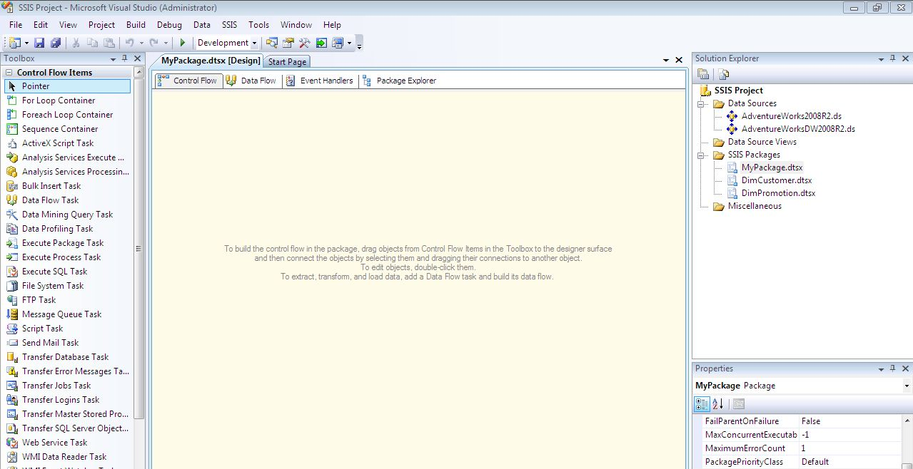
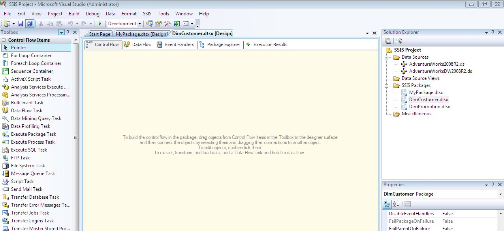
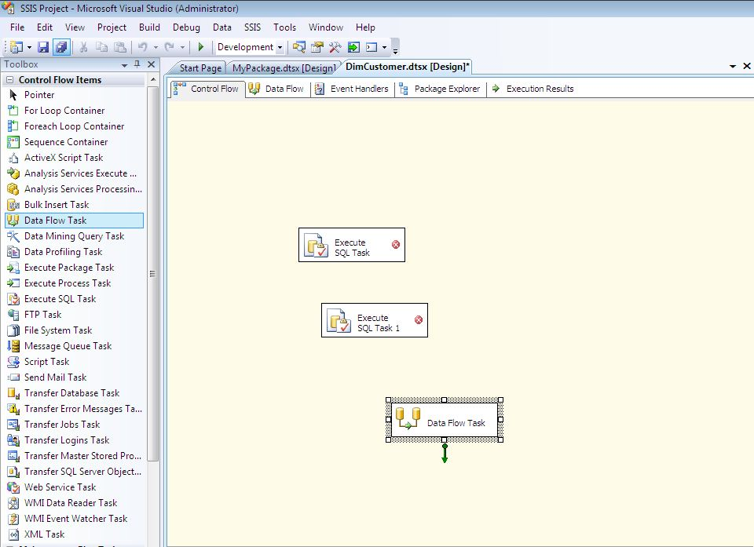
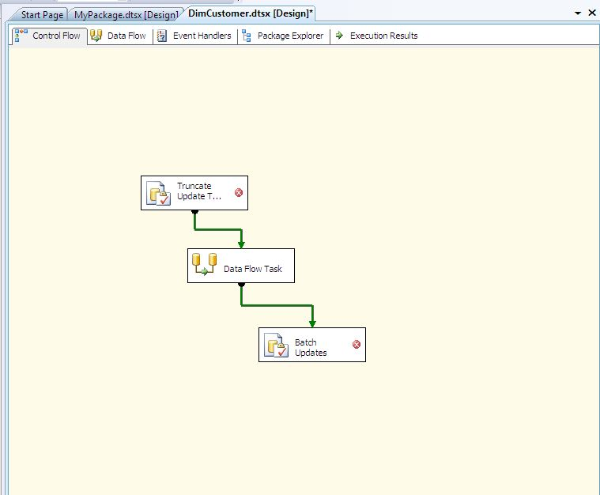
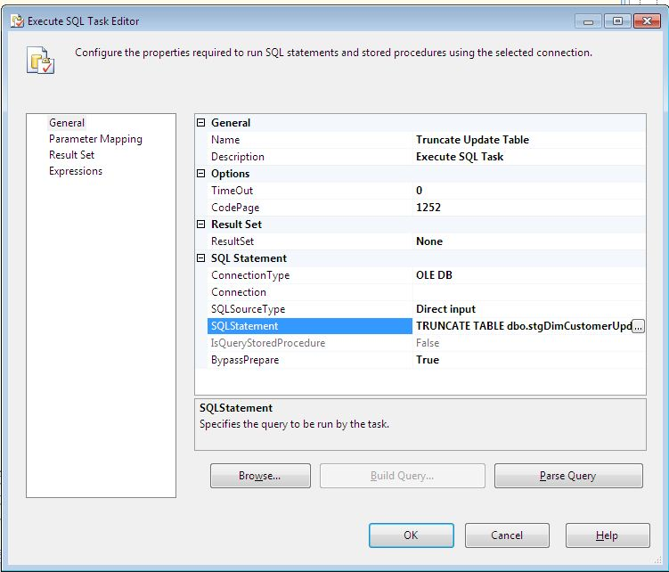
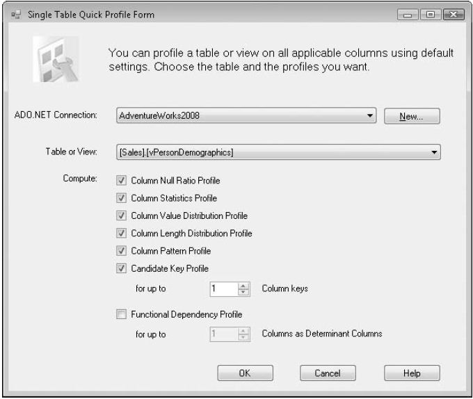

Lifesaver - SSIS Quick fixes
Lifesaver - SSIS Quick fixes Create a file name with today's date
Expression on Flat File or File Connection Manager:
"C:\\SSISProject\\MySSISExport" + (DT_WSTR, 30)(DT_DBDATE)GETDATE() + ".csv"
Output: C:\SSISProject\MySSISExport2013-07-24.csv
Use a 2 digit date (ex. "07" for March instead of "7")
RIGHT("0" + (DT_WSTR, 2)MONTH(GETDATE()),2)
Expression Output: 03 (if the month is March)
Multiple condition if statement
Say, we have a requirement where the a statement is needs to determine whether a column name is blank/NULL. If yes then should be set to unknown.
To make a Logical AND condition, use "&&" instead of the "||" operator.
ISNULL(ColumnName)||TRIM(ColumnName)==""?"Unknown": ColumnName
Returns the first five characters from a zip code
Derived Column Transform in the Data Flow:
SUBSTRING(ZipCodePlus4,1,5)
Remove a given character from a string (ex. Remove "-" from a social security number)
Derived Column Transform in the Data Flow:
REPLACE(SocialSecurityNumber, "-","")
Uppercase data
Derived Column Transfrom in the Data Flow:
UPPER(ColumnName)
Replace NULL with another value
Derived Column Transform in the Data flow:
ISNULL(ColumnName)?"New Value" : ColumnName
Remove any non-numeric data from a column
Script Transform in the Data Flow Task with the code as follows (VB 2008):
Imports System.Text.RegularExpressions
Public Overrides Sub Input()_ProcessInputRows(ByVal Row As Input()Buffer)
If Row.ColumnName_IsNull = False Or Row.ColumnName = "" Then
Dim pattern As String = String.Empty
Dim r As Regex = Nothing
pattern = "[^0-9]"
r = New Regex(pattern, RegexOptions.Compiled)
Row.ColumnName = Regex.Replace(Row.ColumnName, pattern, "")
End If
End Sub
Replace blanks with NULL values
Derived Column Transform in the Data Flow:
TRIM(ColumnName)=="" ? (DT_STR, 4, 1252)NULL(DT_STR, 4, 1252) : ColumnName
Convert text to InitCap,i.e, 1st letter in each word is uppercase
Script Transform with the line of partial code as follows:
Row.OutputName = StrConv(Row.InputName, VBStrConv.ProperCase)
Build dynamic SQL statement
Expression on the SQLStatementSource property of Execute SQL Task:
"SELECT Column From " + @[User::TableName] +WHERE
DateFilterColumn = '" + (DT_WSTR,4)YEAR(@
[User::DateTimeVar]) + RIGHT("0" + (DT_WSTR,2)MONTH(@
[User::DateTimeVar]),2) + RIGHT("0" + (DT_WSTR,2)DAY(@
[User::DateTimeVar]),2) + "'"
Round to the nearest two decimal mark
Expression on Derived Column Transform:
ROUND(YourNumber, 2)
Expression Output Example: 1.2600000
RIGHT("0" + (DT_WSTR, 2)MONTH(GETDATE()),2)
Expression Output: 03 (if the month is March)
Multiple condition if statement
Say, we have a requirement where the a statement is needs to determine whether a column name is blank/NULL. If yes then should be set to unknown.
To make a Logical AND condition, use "&&" instead of the "||" operator.
ISNULL(ColumnName)||TRIM(ColumnName)==""?"Unknown": ColumnName
Returns the first five characters from a zip code
Derived Column Transform in the Data Flow:
SUBSTRING(ZipCodePlus4,1,5)
Remove a given character from a string (ex. Remove "-" from a social security number)
Derived Column Transform in the Data Flow:
REPLACE(SocialSecurityNumber, "-","")
Uppercase data
Derived Column Transfrom in the Data Flow:
UPPER(ColumnName)
Replace NULL with another value
Derived Column Transform in the Data flow:
ISNULL(ColumnName)?"New Value" : ColumnName
Remove any non-numeric data from a column
Script Transform in the Data Flow Task with the code as follows (VB 2008):
Imports System.Text.RegularExpressions
Public Overrides Sub Input()_ProcessInputRows(ByVal Row As Input()Buffer)
If Row.ColumnName_IsNull = False Or Row.ColumnName = "" Then
Dim pattern As String = String.Empty
Dim r As Regex = Nothing
pattern = "[^0-9]"
r = New Regex(pattern, RegexOptions.Compiled)
Row.ColumnName = Regex.Replace(Row.ColumnName, pattern, "")
End If
End Sub
Replace blanks with NULL values
Derived Column Transform in the Data Flow:
TRIM(ColumnName)=="" ? (DT_STR, 4, 1252)NULL(DT_STR, 4, 1252) : ColumnName
Convert text to InitCap,i.e, 1st letter in each word is uppercase
Script Transform with the line of partial code as follows:
Row.OutputName = StrConv(Row.InputName, VBStrConv.ProperCase)
Build dynamic SQL statement
Expression on the SQLStatementSource property of Execute SQL Task:
"SELECT Column From " + @[User::TableName] +WHERE
DateFilterColumn = '" + (DT_WSTR,4)YEAR(@
[User::DateTimeVar]) + RIGHT("0" + (DT_WSTR,2)MONTH(@
[User::DateTimeVar]),2) + RIGHT("0" + (DT_WSTR,2)DAY(@
[User::DateTimeVar]),2) + "'"
Round to the nearest two decimal mark
Expression on Derived Column Transform:
ROUND(YourNumber, 2)
Expression Output Example: 1.2600000
Lifesaver - SSRS Quick Fixes
Lifesaver - SSRS Quick fixes
Return first day of current Week (Default Start Date parameter to return WTD)
Expression on the parameter default value:
=DateAdd("d",-DatePart(DateInterval.WeekDay,Today,0,0)+1,Today)
Output: 14/7/2013 12:00:00 AM
Return first day of current Month (Default Start Date parameter to return MTD)
Expression on the parameter default value:
=DateAdd("d",-(Day(today)-1), Today)
or
=DateSerial( year(today()), month(today()), 1)
Output:11/1/2010 12:00:00 AM
Return first day of current year (Default Start Date parameter to return YTD)
Expression on the parameter default value:
=DateAdd("d",-DatePart(DateInterval.DayOfYear,Today,0,0)+1,Today)
Output: 1/1/2010 12:00:00 AM
Return period over period (Default date parameters to a rolling year)
Expression on the parameter default value:
Week over Week
=DateAdd("ww",-1, Today)
Month over Month
=DateAdd("m",-1,Today)
Year over Year
=DateAdd("yyyy",-1, Today)
Output:10/9/2010 12:00:00 AM
Return current month name
Expression in Text Box:
=MonthName(Month(Today()))
Output:July
Uppercase fields
Expression in Text Box:
=UCASE(Fields!FieldName.Value)
Output:UPPERCASE
Convert text to proper case or InitCap (1st letter in each word is uppercase)
Expression in Text Box:
=StrConv(Fields!FieldName.Value, VbStrConv.ProperCase)
Replace NULL with another value Expression in Text Box:
=iif(Fields!FieldName.Value = nothing, "No Value",Fields! FieldName.Value)
Alternating row color (Banding effect) BackgroundColor property on Text Box:
=iif(RowNumber(Nothing) Mod 2 = 0, "Silver", "White")
Handling division by zero
Expression in Text Box:
=iif(Fields!DenominatorField.Value = 0, 0, Fields!NumeratorField.Value/ iif(Fields!DenominatorField.Value = 0, 1, Fields! DenominatorField.Value))
security number
Expression in Text Box:
=Replace(Fields!EmailAddress.Value,"-","")
Lifesaver - SSAS MDX Quick fixes
Lifesaver - SSAS MDX Quick fixes Simple Gross Profit Calculation
[Measures].[Sales Amount] - [Measures].[Total Product Cost]
Sales in the USA
([Measures].[Sales Amount], [Customer].[Country].&[United States])
Year to Date Sales (Works for any level of Date Hiearchy)
Aggregate( PeriodsToDate( [Date].[Calendar Hierarchy].[Year], [Date].[Calendar Hierarchy].CurrentMember ), ([Measures].[Sales]))
Alternate Year To Date Expression (YTD, QTD, MTD)
AGGREGATE ( YTD ([Date Order].[Calendar].CurrentMember), Measures.[Sales Amount])
Product Ranking
IIF (Product.Product.CurrentMember IS Product.Product.[All],NULL,
IIF (Measures.[Sales Amount] = 0, NULL,
RANK(Product.Product.CurrentMember, ORDER (Product.Product.Members, Measures.[Sales Amount]))))
Sales from 365 Days Ago
(ParallelPeriod([Invoice Date].[Date Hierarchy].[Date], 365, [Invoice Date].[Date Hierarchy].CurrentMember), [Measures].[Sales Amount])
Sales in the Previous Period
(Measures.[Sales Amount], [Date Order].[Calendar].CurrentMember.PrevMember)
Top 10 Selling Products (Named Set)
TopCount (Product.Product.Product.Members,10,Measures.[Sales Amount])
Three Years Average Sales From NOW()
Avg(
{ParallelPeriod( [Date].[Date].[Year], 3,
StrToMember("[Date].[Date].&[" + Format(now(), "yyyyMMdd") + "]")) :
StrToMember("[Date].[Date].&[" + Format(now(), "yyyyMMdd") + "]")} , [Measures].[Sales Count])
Drillthrough Action Caption 'Get Sales Details for'
+[Product].[Product].CurrentMember.Member_Caption
Change SSAS Calculation Text color
IIF([Measures].[Profit Percentage] < .40, 255 , 0)
Changing a Calculation with a SCOPE statement
SCOPE ([Measures].[Scope Profit]);
THIS = ([Measures].[Sales Amount] - [Measures].[Standard Product Cost]);
END SCOPE;
Clear Ration Value when at all level
SCOPE ([Customer].[Customer Geography].[All], Measures.RatioOverParent);
THIS = NULL
SSAS KPI Value Expression
[Measures].[Sales Amount] * 1.2
SSAS KPI Goal Expression
Case
When IsEmpty (ParallelPeriod ([Date Order].[Fiscal].[Fiscal Year], 1,[Date Order].[Fiscal].CurrentMember))
Then [Measures].[Sales Amount]
Else 1.10 * ([Measures].[Sales Amount], ParallelPeriod([Date Order].[Fiscal].[Fiscal Year], 1,[Date Order].[Fiscal].CurrentMember))
End
SSAS KPI Status Expression
Case
When KpiValue( "Sales Revenue YTD" ) / KpiGoal( "Sales RevenueYTD" ) > 1
Then 1
When KpiValue( "Sales Revenue YTD" ) / KpiGoal( "Sales Revenue YTD" ) <= 1 And KpiValue( "Sales Revenue YTD" ) / KpiGoal( "Sales Revenue YTD" ) >= .85
Then 0
Else -1
End
SSAS KPI Trend Expression
Case
When IsEmpty (ParallelPeriod ([Date Order].[Fiscal].[Fiscal Year], 1,[Date Order].[Fiscal].CurrentMember))
Then 0
When VBA!Abs ((KpiValue( "Sales Revenue YTD" )- (KpiValue( "Sales Revenue YTD" ), ParallelPeriod( [Date Order].[Fiscal].[Fiscal Year], 1, [Date Order].[Fiscal].CurrentMember))) /(KpiValue( "Sales Revenue YTD" ), ParallelPeriod ( [Date Order].[Fiscal].[Fiscal Year], 1,[Date Order].[Fiscal].CurrentMember))) <=.02
Then 0
When (KpiValue( "Sales Revenue YTD" )- (KpiValue( "Sales Revenue YTD" ), ParallelPeriod ( [Date Order].[Fiscal].[Fiscal Year], 1, [Date Order].[Fiscal].CurrentMember))) /(KpiValue( "Sales Revenue YTD" ), ParallelPeriod( [Date Order].[Fiscal].[Fiscal Year],1,[Date Order].[Fiscal].CurrentMember)) >.02
Then 1
Else -1
End
Lifesaver - SSIS All in one
Lifesaver - SSIS All in one
SSIS
SQL Server Integration Services
Description
SQL Server Integration Services (SSIS) is a component of SQL Server which can be used to perform a wide range of Data Migration and ETL operations. SSIS is a component in MSBI process of SQL Server. This is a platform for Integration and Workflow applications. It is known for a fast and flexible OLTP and OLAP extensions used for data extraction, transformation, and loading (ETL).
The tool may also be used to automate maintenance of SQL Server databases and multidimensional data sets.
Tools
Business Intelligence Development Studio (BIDS) for Development of SSIS Projects SQL Server Management Studio (SSMS) to manage the SSIS Packages and Projects
SSIS workflow
Workflow is a set of instructions to specify how to execute tasks and containers within SSIS Packages
Control flow
Control flow contains one or more tasks & containers that execute when the package runs.
Control order or define the conditions for running the next task or container in the package control flow, we use precedence constraints to connect the tasks and containers in a package.
A subset of tasks and containers can also be grouped and run repeatedly as a unit within the package control flow.
Data flow
Data flow contains the sources and destinations that extract and load data, the transformations that modify and extend data, and the paths that link sources, transformations, and destinations
Data Flow task is the executable within the SSIS package that creates, orders, and runs the data flow.
Separate instance of the data flow engine is opened for each Data Flow task in a package.
Categories in the Data Flow
Data Sources, Transformations, and Data Destinations.
Errors
-Data Connection Errors - occur incase the connection manager cannot be initialized with the connection string. This applies to both Data Sources and Data Destinations along with Control Flows that use the Connection Strings.
-Data Transformation Errors - occur while data is being transformed over a Data Pipeline from Source to Destination.
-Expression Evaluation errors - occur if expressions that are evaluated at run time perform invalid
Environment variable
An environment variable configuration sets a package property equal to the value in an environment variable.
For configuring properties that are dependent on the computer that is executing the package.
Transformations available
AGGEGATE - It applies aggregate functions to Record Sets to produce new output records from aggregated values.
AUDIT - Adds Package and Task level Metadata - such as Machine Name, Execution Instance, Package Name, Package ID, etc..
CHARACTER MAP - Performs SQL Server level makes string data changes such as changing data from lower case to upper case.
CONDITIONAL SPLIT – Separates available input into separate output pipelines based on Boolean Expressions configured for each output.
COPY COLUMN - Add a copy of column to the output we can later transform the copy keeping the original for auditing.
DATA CONVERSION - Converts columns data types from one to another type. It stands for Explicit Column Conversion.
DATA MINING QUERY – Used to perform data mining query against analysis services and manage Predictions Graphs and Controls.
DERIVED COLUMN - Create a new (computed) column from given expressions.
EXPORT COLUMN – Used to export a Image specific column from the database to a flat file.
FUZZY GROUPING – Used for data cleansing by finding rows that are likely duplicates.
FUZZY LOOKUP - Used for Pattern Matching and Ranking based on fuzzy logic.
IMPORT COLUMN - Reads image specific column from database onto a flat file.
LOOKUP - Performs the lookup (searching) of a given reference object set against a data source. It is used for exact matches only.
MERGE - Merges two sorted data sets into a single data set into a single data flow.
MERGE JOIN - Merges two data sets into a single dataset using a join junction.
MULTI CAST - Sends a copy of supplied Data Source onto multiple Destinations.
ROW COUNT - Stores the resulting row count from the data flow / transformation into a variable.
ROW SAMPLING - Captures sample data by using a row count of the total rows in dataflow specified by rows or percentage.
UNION ALL - Merge multiple data sets into a single dataset.
PIVOT – Used for Normalization of data sources to reduce analomolies by converting rows into columns
UNPIVOT – Used for demoralizing the data structure by converts columns into rows incase of building Data Warehouses.
Logs
Logging features writes log entries when run-time events occur and can also write custom messages. This is not enabled by default.
Integration Services supports a diverse set of log providers, and gives you the ability to create custom log providers.
The Integration Services log providers can write log entries to text files, SQL Server Profiler, SQL Server, Windows Event Log, or XML files.
Logs are associated with packages and are configured at the package level.
Each task or container in a package can log information to any package log.
The tasks and containers in a package can be enabled for logging even if the package is not logging.
Deploy packages
BUILDing SSIS Projects generates a Deployment Manifest File.
Run the manifest file and decide whether to deploy this onto File System or onto SQL Server [ msdb].
SQL Server Deployment is very faster and more secure then File System Deployment.
Alternatively, import the package from SSMS from File System or SQ Server.
Variables & variable scope
Variables store values that a SSIS package and its containers, tasks, and event handlers can use at run time.
The scripts in the Script task and the Script component can also use variables.
The precedence constraints that sequence tasks and containers into a workflow can use variables when their constraint definitions include expressions.
Perfmon counterd
SQLServer:SSIS Service
SSIS Package Instances
SQLServer:SSIS Pipeline
BLOB bytes read
BLOB bytes written
BLOB files in use
Buffer memory
Buffers in use
Buffers spooled
Flat buffer memory
Flat buffers in use
Private buffer memory
Private buffers in use
Rows read
Rows written
Tools
Business Intelligence Development Studio (BIDS) for Development of SSIS Projects SQL Server Management Studio (SSMS) to manage the SSIS Packages and Projects
SSIS workflow
Workflow is a set of instructions to specify how to execute tasks and containers within SSIS Packages
Control flow
Control flow contains one or more tasks & containers that execute when the package runs.
Control order or define the conditions for running the next task or container in the package control flow, we use precedence constraints to connect the tasks and containers in a package.
A subset of tasks and containers can also be grouped and run repeatedly as a unit within the package control flow.
Data flow
Data flow contains the sources and destinations that extract and load data, the transformations that modify and extend data, and the paths that link sources, transformations, and destinations
Data Flow task is the executable within the SSIS package that creates, orders, and runs the data flow.
Separate instance of the data flow engine is opened for each Data Flow task in a package.
Categories in the Data Flow
Data Sources, Transformations, and Data Destinations.
Errors
-Data Connection Errors - occur incase the connection manager cannot be initialized with the connection string. This applies to both Data Sources and Data Destinations along with Control Flows that use the Connection Strings.
-Data Transformation Errors - occur while data is being transformed over a Data Pipeline from Source to Destination.
-Expression Evaluation errors - occur if expressions that are evaluated at run time perform invalid
Environment variable
An environment variable configuration sets a package property equal to the value in an environment variable.
For configuring properties that are dependent on the computer that is executing the package.
Transformations available
AGGEGATE - It applies aggregate functions to Record Sets to produce new output records from aggregated values.
AUDIT - Adds Package and Task level Metadata - such as Machine Name, Execution Instance, Package Name, Package ID, etc..
CHARACTER MAP - Performs SQL Server level makes string data changes such as changing data from lower case to upper case.
CONDITIONAL SPLIT – Separates available input into separate output pipelines based on Boolean Expressions configured for each output.
COPY COLUMN - Add a copy of column to the output we can later transform the copy keeping the original for auditing.
DATA CONVERSION - Converts columns data types from one to another type. It stands for Explicit Column Conversion.
DATA MINING QUERY – Used to perform data mining query against analysis services and manage Predictions Graphs and Controls.
DERIVED COLUMN - Create a new (computed) column from given expressions.
EXPORT COLUMN – Used to export a Image specific column from the database to a flat file.
FUZZY GROUPING – Used for data cleansing by finding rows that are likely duplicates.
FUZZY LOOKUP - Used for Pattern Matching and Ranking based on fuzzy logic.
IMPORT COLUMN - Reads image specific column from database onto a flat file.
LOOKUP - Performs the lookup (searching) of a given reference object set against a data source. It is used for exact matches only.
MERGE - Merges two sorted data sets into a single data set into a single data flow.
MERGE JOIN - Merges two data sets into a single dataset using a join junction.
MULTI CAST - Sends a copy of supplied Data Source onto multiple Destinations.
ROW COUNT - Stores the resulting row count from the data flow / transformation into a variable.
ROW SAMPLING - Captures sample data by using a row count of the total rows in dataflow specified by rows or percentage.
UNION ALL - Merge multiple data sets into a single dataset.
PIVOT – Used for Normalization of data sources to reduce analomolies by converting rows into columns
UNPIVOT – Used for demoralizing the data structure by converts columns into rows incase of building Data Warehouses.
Logs
Logging features writes log entries when run-time events occur and can also write custom messages. This is not enabled by default.
Integration Services supports a diverse set of log providers, and gives you the ability to create custom log providers.
The Integration Services log providers can write log entries to text files, SQL Server Profiler, SQL Server, Windows Event Log, or XML files.
Logs are associated with packages and are configured at the package level.
Each task or container in a package can log information to any package log.
The tasks and containers in a package can be enabled for logging even if the package is not logging.
Deploy packages
BUILDing SSIS Projects generates a Deployment Manifest File.
Run the manifest file and decide whether to deploy this onto File System or onto SQL Server [ msdb].
SQL Server Deployment is very faster and more secure then File System Deployment.
Alternatively, import the package from SSMS from File System or SQ Server.
Variables & variable scope
Variables store values that a SSIS package and its containers, tasks, and event handlers can use at run time.
The scripts in the Script task and the Script component can also use variables.
The precedence constraints that sequence tasks and containers into a workflow can use variables when their constraint definitions include expressions.
Perfmon counterd
SQLServer:SSIS Service
SSIS Package Instances
SQLServer:SSIS Pipeline
BLOB bytes read
BLOB bytes written
BLOB files in use
Buffer memory
Buffers in use
Buffers spooled
Flat buffer memory
Flat buffers in use
Private buffer memory
Private buffers in use
Rows read
Rows written
Lifesaver - SSRS All in one
Lifesaver - SSRS All in one
SSRS SQL Server Reporting Services
Description
SQL Server Reporting Service is one of the server-based software systems that generate reports developed by Microsoft. It is used for preparing and delivering interactive and variety of printed reports. It is administered through an interface that is web based.
Reporting services utilizes a web service interface for supporting and developing of customized reporting applications. It can be competed with Crystal Reports and other business intelligent tools.
SSRS Architecture
Reporting services architecture is comprises of integrated components. It is multi-tiered, included with application, server and data layers. This architecture is scalable and modular. A single installation can be used across multiple computers.
Components
Report Manager
Reporting Designer
Browser Types Supported by Report Manager
Report server
Report server command line utilities
Report Server Database
Reporting Services Extensibility
Data sources that is supported by Reporting Services
Reporting Life Cycle
Report designing – The designing is done in Visual Studio Report Designer. Generates a class which embodies the Report Definition.
Report processing – The processing includes binging the report definition with data from the report data source. It performs on all grouping, sorting and filtering calculations. The expressions are evaluated except the page header, footer and section items. Later it fires the Binding event and Bound event.
As a result of the processing, it produces Report Instance.
Report instance may be persisted and stored which can be rendered at a later point of time.
Report Rendering - Report rendering starts by passing the Report Instance to a specific rendering extension (HTML or PDF formats). The instance of reports is paged if paging supported by output format. The expressions of items are evaluated in the page header and footer sections for every page. As a final step, the report is rendered to the specific output document.
Data Driven Subscriptions
Reporting Services provides data-driven subscriptions so that you can customize the distribution of a report based on dynamic subscriber data.
Data-driven subscriptions are intended for:
1. Distributing reports to a large recipient pool whose membership may change from one distribution to the next. For example distribute a monthly report to all current customers.
2. Distributing reports to a specific group of recipients based on predefined criteria. For example send a sales performance report to the top ten sales managers in an organization.
Logical Page and Physical Page in SSRS
Logical page breaks are page breaks that you insert before or after report items or groups.
Page breaks help to determine how the content is fitted to a report page for optimal viewing when rendering or exporting the report.
Logical page breaks are ignored for report items that are constantly hidden and for report items where the visibility is controlled by clicking another report item.
Logical page breaks are applied on conditionally visible items if they are currently visible at the time the report is rendered.
Space is preserved between the report item with the logical page break and its peer report items.
Logical page breaks that are inserted before a report item push the report item down to the next page. The report item is rendered at the top of the next page.
Logical page breaks defined on items in table or matrix cells are not kept. This does not apply to items in lists.
Use Null Data driven Subscription
When you specify the Null Delivery Provider as the method of delivery in the subscription, the report server targets the report server database as the delivery destination and uses a specialized rendering extension called the null rendering extension.
In contrast with other delivery extensions, the Null Delivery Provider does not have delivery settings that you can configure through a subscription definition.
Report manager
Report manager is a web application accessed by a URL. The interface of this Report manager depends on the permissions of the user. This means to access any functionality or perform any task, the user must be assigned a role. A user with a role of full permissions can entire all the features and menus of the report.
Reporting Services components
Reporting services components assist in development. These processing components include some tools that are used to create, manage and view reports. A report designer is used to create the reports. a report sever is used to execute and distribute reports. a report manager is used to manage the report server.
Report Builder
Report Builder is a business-user, ad-hoc report design client that allows users to design reports based on the business terms (Report Builder model) they are familiar with, but without needing to understand database schemas or how to write SQL or MDX queries. Report Builder works with both SQL Server and Analysis Services data sources.
Import Microsoft Excel data to SSRS
Reporting Services does not import data. It only queries data in whatever format it is stored in their native storage system. I will assume that you're asking whether you can create reports and use Excel spreadsheets as data sources. The answer is Yes, Reporting Services supports a wide variety of data sources, including Excel files. You'll get the best performance with the built-in native .NET providers but you should be able to connect to any ODBC or OLE-DB data source, whether it comes from Microsoft or a third-party company.
Deploy SSRS reports on personal website
Reports can only be deployed on a reporting services site. Your only option for viewing them from other sites is an HTTP link.
Some tools, like SharePoint offer controls allowing you to view reports in the context of the other websites, but the report is still deployed to and hosted from reporting services.
SSIS Exercise 01
SSIS Exercise 01
Create SSIS packages and Data sources
We will create a new SSIS project and then work with a couple of SSIS packages by adding data sources and connections.
Start SQL Server Business Intelligence Development Studio (BIDS), by clicking the Start button and then selecting All Programs, Microsoft SQL Server 2008, SQL Server Business Intelligence Development Studio.

Choose New, Project from the File menu. (If you have Visual Studio 2008 installed separately from BIDS, simply choose New Project from the File menu.)
The New Project dialog box displays all the installed templates for Microsoft Visual Studio, including the Business Intelligence Projects templates.
In the New Project dialog box, confirm that Business Intelligence Projects is selected in the Project Types area, and then in the Templates area, select the Integration Services Project template.
Near the bottom of the New Project dialog box, in the Name box, type "SSIS Project" as the name of your SSIS project. Click OK to have BIDS create the new SSIS project.

When the project is created, SSIS automatically creates a new SSIS package named Package.dtsx and opens it in the SSIS Designer. In Solution Explorer, right-click Package.dtsx, and then click Rename.
Rename the package by typing .dtsx. BIDS might prompt you to rename the package object.
If a message box appears that prompts you to rename the package object as well, click Yes. Always click Yes if you are prompted to change the package object when renaming a package because this updates the internal name of the package.

Click the Save button on the toolbar, and then close the package by clicking the Close button in the upper-right corner of the SSIS Designer.
To create a new package, right-click the SSIS Packages folder in Solution Explorer, and then click New SSIS Package. This creates a new package object named Package1.dtsx (the number depends on how many packages you have created) in the SSIS Packages folder in Solution Explorer.

To rename the new package, right-click the package, and then click Rename. Rename the package to DimCustomer.dtsx because this package will contain logic to process the customer dimension table. When prompted, click Yes to rename the package object.
{kind=link}
Following the same steps, create one more package in your SSIS Project named DimPromotion.dtsx.
{kind=link}
SSIS Exercise 02
SSIS Exercise 02
Create SSIS packages and Data sources
We will create two project data sources, which will be used in your packages as the source and the destination.
Start SQL Server Business Intelligence Development Studio (BIDS), open the project you created in Exercise 1, SSIS Project, and then open Solution Explorer (if it is not already displayed).
You can open Solution Explorer by clicking the Solution Explorer button on the Standard toolbar.
In Solution Explorer, right-click the Data Sources folder, and then click New Data Source. When the Welcome page of the Data Source Wizard appears, click Next.
{kind=link}
{kind=link}
On the Select How To Define The Connection page, select Create A Data Source Based On An Existing Or New Connection.
Click New to open the Connection Manager dialog box.
In the Provider drop-down list, select the Native OLE DB\SQL Server Native Client 10 provider and click OK. Type (local) in the Server Name field.
In the Select Or Enter A Database Name drop-down list, select AdventureWorks2008. (AdventureWorks2008 is free to download and use database available on MS website)
{kind=link}
Click the Test Connection button, and then click OK. Click OK again to close the Connection
Manager dialog box.
Select the (local).AdventureWorks2008 data connection in the Data Connections list, and then click Finish in the Data Source Wizard.
{kind=link}
The Completing The Wizard page prompts you to enter a name for the new project data source. Type AdventureWorks2008 in the Data Source Name box, and then click Finish. Be sure to remove the space between Adventure and Works2008R2.
{kind=link}
Next, repeat steps 2 to 9 to create a new project data source for the (local).Adventure- WorksDW2008R2 database, and name this data source AdventureWorksDW2008R2.
{kind=link}
When you are finished creating the data sources, click the Save All button on the BIDS toolbar.
{kind=link}
SSIS Exercise 03
SSIS Exercise 03
Create SSIS packages and Data sources
We will add the project data sources that we just created to the two packages that we have developed.
If necessary, start SQL Server Business Intelligence Development Studio (BIDS), open the project you created in Exercise 1, SSIS Project, and then open Solution Explorer.
Edit your MyPackage.dtsx package by double-clicking the package in Solution Explorer.

{kind=link}
Locate the Connection Managers pane (at the bottom of the SSIS Designer window), right-click in the pane, and then click New Connection From Data Source.
{kind=link}
In the Select Data Source dialog box, select both the AdventureWorks2008R2 and AdventureWorksDW2008R2 data sources from the list, and then click OK to accept.
This puts the two project data sources into the package’s Connection Managers pane.
Perform the same steps in the DimCustomer.dtsx package to add the Adventure- Works2008R2 and AdventureWorksDW2008R2 project data sources as connection managers for the package.
{kind=link}
When you are finished creating the connection managers, click the Save All button on the BIDS toolbar.
{kind=link}
Remember that:
Both project data sources and package connections are connection strings. However, a data source resides outside the package and can be used as the connection reference for more than one package. A package connection does not have to be associated with a data source. Connections are updated by their associated data sources only when the package is opened for editing in BIDS.
SSIS Exercise 04
SSIS Exercise 04
Create control flow and execute package
Start SQL Server Business Intelligence Development Studio (BIDS), open the project "SSIS Project" created earlier here and here completed till here.
Open the Toolbox window by selecting Toolbox from the View menu, locate the Execute SQL Task item, and drag it to the control flow workspace of your package.
{kind=link}
Edit the Execute SQL Task object. This can be done by either of the following:
- double-click on the task icon
- right-click the task icon > click Edit.
{kind=link}
Update Execute SQL Task Editor > Statement Property, type:
UPDATE Production.Product
SET ProductLine = 's'
WHERE ProductLine IS NULL
{kind=link}
Click OK in the Execute SQL Task dialog box. Then, right-click the Execute SQL Task > click Rename > and type Update ProductLine.
{kind=link}
Now, drag a Sequence Container object from toolbox onto the control flow workspace.
Drag the just created Update ProductLine Execute SQL Task into the Sequence Container. This will ensure that the task is nested in the Sequence Container box.
{kind=link}
Test the execution of the package by click Start Debugging on the Standard toolbar or choose Start Debugging from the Debug menu.
{kind=link}
The Sequence Container and Execute SQL Task should be green after the package execution is complete.
{kind=link}
To view the execution details - Click the Execution Results tab (which was named as Progress while the package is executing) in the SSIS Designer.
{kind=link}
To stop the debugger, Select the Stop button from the tool menu or choose Debug > Stop Debugging from the Debug menu.
{kind=link}
Click the Save All button to save the project.
SSIS Exercise 05
SSIS Exercise 05
Modify ETL Package Control Flow
This exercise will allow us to start the process of building the DimCustomer SSIS package that will handle the ETL process from the AdventureWorks2008 database to the AdventureWorks-DW2008 database.
Start SQL Server Business Intelligence Development Studio (BIDS), open the project SSIS Project you created in last exercise here and then open the empty DimCustomer package.

{kind=link}
From the toolbox, drag two Execute SQL Tasks onto the control flow workspace and then drag one Data Flow Task onto the workspace.

{kind=link}
Now, connect the first Execute SQL Task to the Data Flow Task by dragging the green precedence constraint from the Execute SQL Task onto the Data Flow Task.

Then connect the green precedence constraint from the Data Flow Task to the second Execute SQL Task.

Rename the first Execute SQL Task to Truncate Update Table, and rename the second Execute SQL Task to Batch Updates.

{kind=link}
Now, open SSMS, connect to the Database Engine, and create a new query against the AdventureWorksDW2008R2 database. Execute the following code
USE AdventureWorksDW2008R2
GO
CREATE TABLE [dbo].[stgDimCustomerUpdates](
[CustomerAlternateKey] [nvarchar](15) NULL,
[AddressLine1] [nvarchar](60) NULL,
[AddressLine2] [nvarchar](60) NULL,
[BirthDate] [datetime] NULL,
[CommuteDistance] [nvarchar](15) NULL,
[DateFirstPurchase] [datetime] NULL,
[EmailAddress] [nvarchar](50) NULL,
[EnglishEducation] [nvarchar](40) NULL,
[EnglishOccupation] [nvarchar](100) NULL,
[FirstName] [nvarchar](50) NULL,
[Gender] [nvarchar](1) NULL,
[GeographyKey] [int] NULL,
[HouseOwnerFlag] [nvarchar](1) NULL,
[LastName] [nvarchar](50) NULL,
[MaritalStatus] [nvarchar](1) NULL,
[MiddleName] [nvarchar](50) NULL,
[NumberCarsOwned] [tinyint] NULL,
[NumberChildrenAtHome] [tinyint] NULL,
[Phone] [nvarchar](25) NULL,
[Suffix] [nvarchar](10) NULL,
[Title] [nvarchar](8) NULL,
[TotalChildren] [tinyint] NULL,
[YearlyIncome] [nvarchar](100) NULL) ON [PRIMARY]

After the table is created, switch back to the DimCustomer SSIS package and edit the Execute SQL Task named Truncate Update Table.
In the Execute SQL Task Editor dialog box, set the Connection property to Adventure-WorksDW2008R2, and then enter the following SQL code in the SQLStatement property
TRUNCATE TABLE dbo.stgDimCustomerUpdates
Click OK to save it

{kind=link}
Edit the last Execute SQL Task, named Batch Updates, and set the Connection property to AdventureWorksDW2008R2
In the SQLStatement property, enter the following UPDATE statement:
UPDATE dbo.DimCustomer
SET AddressLine1 = stgDimCustomerUpdates.AddressLine1
, AddressLine2 = stgDimCustomerUpdates.AddressLine2
, BirthDate = stgDimCustomerUpdates.BirthDate
, CommuteDistance = stgDimCustomerUpdates.CommuteDistance
, DateFirstPurchase = stgDimCustomerUpdates.DateFirstPurchase
, EmailAddress = stgDimCustomerUpdates.EmailAddress
, EnglishEducation = stgDimCustomerUpdates.EnglishEducation
, EnglishOccupation = stgDimCustomerUpdates.EnglishOccupation
, FirstName = stgDimCustomerUpdates.FirstName
, Gender = stgDimCustomerUpdates.Gender
, GeographyKey = stgDimCustomerUpdates.GeographyKey
, HouseOwnerFlag = stgDimCustomerUpdates.HouseOwnerFlag
, LastName = stgDimCustomerUpdates.LastName
, MaritalStatus = stgDimCustomerUpdates.MaritalStatus
, MiddleName = stgDimCustomerUpdates.MiddleName
, NumberCarsOwned = stgDimCustomerUpdates.NumberCarsOwned
, NumberChildrenAtHome = stgDimCustomerUpdates.NumberChildrenAtHome
, Phone = stgDimCustomerUpdates.Phone
, Suffix = stgDimCustomerUpdates.Suffix
, Title = stgDimCustomerUpdates.Title
, TotalChildren = stgDimCustomerUpdates.TotalChildren
FROM dbo.DimCustomer DimCustomer
INNER JOIN dbo.stgDimCustomerUpdates
ON DimCustomer.CustomerAlternateKey = stgDimCustomerUpdates.CustomerAlternateKey
Click OK in the Execute SQL Task Editor dialog box, and then save the package.

You have successfully created an ETL flow.
SSIS Control Flow Containers
SSIS Control Flow Containers
A package will and must contain at least one task that performs some or the other operation; however, mostly, packages will have numerous tasks that coordinate with each other.
There is need for finding a way to organize those tasks. This is where a control flow container come ointo picture.
A control flow container lets you group tasks together to control how tasks are run in parallel as well as ordering, logging, and transactions.
Containers can also execute the tasks within them several times based on iterative requirements.
Same as tasks, containers can be found in the toolbox when working in the control flow. Simply drag the container from the toolbox onto your control flow workspace.
{kind=link}
Three primary containers in SSIS are as follows:
Sequence Container Allows organizing subordinate tasks by grouping them together, and apply transactions or assign logging to the container.
For Loop Container Provides the same functionality as the Sequence Container except that it also allows to run the tasks within it multiple times based on an evaluation condition, such as looping from 1 to 10.
Foreach Loop Container Also allows looping, but instead of providing a condition expression, loops over a set of objects, such as files in a folder. It can also return file name into variable.
SSIS Control Flow Objects and Tasks
SSIS Control Flow Objects and Tasks
When you have an SSIS project open within BIDS and are designing a package, the tabs across the top of the SSIS Designer let you choose an SSIS component to work with. The Control Flow design surface is the first tab and displays a workspace where you configure control flow objects.
There are three primary types of control flow objects:
Control flow tasks Workflow objects that perform operational-level jobs
Control flow containers Provide a grouping mechanism for tasks and other containers
Constraints Let you connect tasks and containers and define execution ordering and precedence
A control flow task is an SSIS component that performs an operation such as sending an e-mail message, executing an SQL statement, or copying a file from an FTP server. When a control flow task is complete, it either succeeded or failed. You use the control flow to coordinate the execution of tasks in parallel or to set precedence constraints based on the tasks’ completion status.
To create a new control flow task in package, drag the task from the toolbox to the Control Flow tab in the SSIS Designer
After you add a task to the control flow workspace, you need to configure the task to perform the specific operation you selected. To allow configuration, you will have to EDIT the task.
Few Highlighted Tasks
"ActiveX Script Task" Runs Microsoft Visual Basic Scripting Edition (VBScript) and JScript code and is included mainly for legacy support when a Data Transformation Services (DTS) package is migrated to SSIS.
"Analysis Services Execute DDL Task" Runs XML for Analysis (XMLA) code against an SSAS database. XMLA is the data definition language (DDL) for SSAS; therefore, this task lets you perform common structure changes such as adding partitions to cubes.
"Analysis Services Processing Task" Allows the processing of SSAS objects through an SSIS package.
"Bulk Insert Task" Allows the execution of bulk copy operations for SQL Server. This task works only against a SQL Server Database Engine.
"Data Flow Task" Allows data processing from sources to destinations.
"Data Mining Query Task" Performs data mining queries and lets you capture the results for analysis.
"Data Profiling Task" Allows the analysis of source data for patterns, missing data, candidate keys, and statistics. These results typically inform developers about what logic to include in their SSIS packages based on their data needs.
"Execute DTS 2000 Package Task" Runs a DTS package within SSIS.
"Execute Package Task" Runs other SSIS packages either deployed to SQL Server or in the file system.
"Execute Process Task" Runs a command-line operation such as program or batch file execution.
"Execute SQL Task" Runs SQL code against any underlying database connection in the SQL language of the connected database engine.
"File System Task" Lets you copy, move, and delete files as well as perform other file and folder operations.
"FTP Task" Sends and receives files between the file system and an FTP server and performs simple file and folder operations on the FTP server.
"Message Queue Task" Integrates with Message Queuing (MSMQ) on a server running Windows to read and send messages.
"Script Task" Runs Microsoft Visual Basic 2008 or Microsoft Visual C# 2008 within an SSIS package.
"Send Mail Task" Sends an e-mail message through an SMTP server.
"Transfer [Object] Task" Tasks that copy SQL Server objects from one system to another, including databases, SQL Server Agent jobs, error messages, logins, master stored procedures, and database-level objects.
"Web Service Task" Lets you connect to a Web service to send or receive information.
"WMI Data Reader Task" Lets you run a Windows Management Instrumentation (WMI) query against the operating system to capture server information.
"WMI Event Watcher Task" Waits for a particular event before executing.
"XML Task" Combines, queries, and differentiates multiple XML files on the server.
SSIS Package Variables, Script and Profiling
SSIS Package Variables, Script and Profiling
Variables in SSIS are used to integrate objects by passing values between tasks and containers, accepting values from external sources, or building code dynamically that is then executed. Variables are also used for auditing and logging.
All SSIS variables are given a name, scope, data type, and value. The scope defines at what level within a package the variable is created. For example, when a Foreach Loop Container is selected and then Add Variable button is clicked on the toolbar for the Variables window, the variable is scoped at that level.
When no tasks or containers are selected, the variable is scoped at the entire package level. Also, the Variables window lets you add, delete, or modify variables in a package.

variables are referenced as User::[VariableName] or System::[VariableName].
System variables are not editable but can be referenced within tasks and containers. System variables are set by the package for tracking metadata such as the package name and the user that executes the package.
To view all system variables, click Show System Variables (the button labeled with an X) on the Variables window toolbar.
User variables can be created and defined by developer for any purpose in the package.
Do take a good note here of Script Task and Data Profiling Task now; because it is specially mentioned in the Self Paced training kit of Microsoft Exam 70-448.
Script Task is used in SSIS to execute VB.NET or C#.NET code. The Script Task has the following features:
- Uses the Visual Studio Tools for Applications 2.0 (VSTA) interface, which lets you run VB.NET and C#.NET code with the full host of methods and functions.
- Variables can be referenced and updated within a script.
- Connections can be referenced and updated within a script.
- SSIS breakpoints can be applied within the script’s code (for the Script Task).
- Runs in both a 32-bit environment (X86) and a 64-bit environment (X64).
Data Profiling Task is used to review source data entities, to check the cleanliness and completeness of the data, and to understand how the data is organized structurally, such as possible key columns and relationships between columns.
The Data Profiling Task has two parts: the Data Profiling Task in the control flow that performs the analysis and the Data Profile Viewer to review the results.
To use the Data Profiling Task, first create an ADO.NET connection where the source tables or views reside. The Data Profiling Task requires an ADO.NET connection for sources. Next, drag the task from the toolbox onto the control flow, and then open the task to edit its properties. An easy way to perform a data profile is to click the Quick Profile button in the Data Profiling Task Editor.
Single Table Quick Profile Form dialog box configured to run against the [Sales].[vPersonDemographics] view.
Data Profiling Task can analyze data in various ways
Column Null Ratio Profile Evaluates the column and returns the percent of NULLs in the column relative to the total number of rows in the table
Column Statistics Profile returns the spread and averages of the values for numeric and datetime columns
Column Value Distribution Profile Identifies the uniqueness of the values in a column across all the rows for that column
Column Length Distribution Profile Shows the various value lengths for a text column and the percentage of all the rows that each length takes up
Column Pattern Profile Displays any patterns found in the column data and returns the regular expression pattern that matches the pattern
Candidate Key Profile Identifies one or more columns that are unique across all the rows; the percentage of uniqueness is shown
Functional Dependency Profile Lists any columns that have value dependencies on other columns within the table, where a value from one column is found only when the value of another column is distinct

{kind=link}
After you configure the Data Profiling Task through the Single Table Quick Profile Form dialog box, you need to specify the output XML file in the Destination property. This is where the task stores the profiling results.
To view the results, open the Data Profile Viewer. (Click Start and then select All Programs, Microsoft SQL Server 2008R2, Integration Services, Data Profile Viewer.) Click Open on the toolbar, and browse to the output XML file where the results are stored.

A package can be executed in the BIDS in three ways
- Choose Start Debugging from the Debug menu on the menu bar
- Click Start Debugging (the button containing an arrow that resembles the Play button on a DVD player) on the Standard toolbar
- Press F5 on your keyboard
After a package is run in BIDS, a new tab named the Progress tab appears in the SSIS Designer. This tab shows the execution results and allows to troubleshoot any package errors that might be found. The Progress tab is renamed as Execution Results when in design view.
Also Read
- Case Study: Multiply Revenue as well as Customer Base
- Tool: Project Stages Tracker
- Exploring Cloud platform on Google
- BabaGyan.com Exploring Ghost Blogging platform on Bitnami
- Solutions for issues faced during hadoop configuration
- Hadoop and Ubuntu - step 4
- Hadoop and Ubuntu - step 3
- Hadoop and Ubuntu - step 2
- Hadoop and Ubuntu - step 1
- Usage of Hadoop
- Hadoop architecture birdview
- Pros and Cons of Gmail displaying images in your emails
- CLT20 2013 Twitter Analysis
- ETL BI BigData Past Future
- Tool: Daily Expense Tracker
- Lifesaver: Ways to create a website
- LifeSaver: Business Intelligence Projects - Success and Failures
- LifeSaver: Differences between UDT and IDT
- Data Quality in ETL and BI
- Problem Solving Methodology
- What is Mentoring
- QlikView advantage over query based BI
- Types of data
- Lyrics One Two Three Four Chennai Express
- QlikView Licensing - an Overview
- Theme song lyrics - Baba jee ki booti
- TV - OLED vs LED vs LCD vs Plasma
- Review Google Moto X
- Review: Blackberry Q10 and Blackberry Q5
- Lifesaver - SSRS All in one
- Lifesaver - SSIS All in one
- Lifesaver - SSAS MDX Quick fixes
- Lifesaver - SSRS Quick fixes
- SSIS Package Variables, Script and Profiling
- Lifesaver - SSIS Quick fixes
- SSIS Control Flow Containers
- SSIS Control Flow Objects
- SSIS Exercise 05
- SSIS Exercise 04
- SSIS Exercise 03
- SSIS Exercise 02
- SSIS Exercise 01
- Theme song lyrics - The Big Bang Theory
- Theme song lyrics - F.R.I.E.N.D.S
- SQL - Aggregate & Analytic functions
- SQL - List of Analytical functions
- SQL - Where, Operators and alias
- SQL - Structured Query Language for Database quering